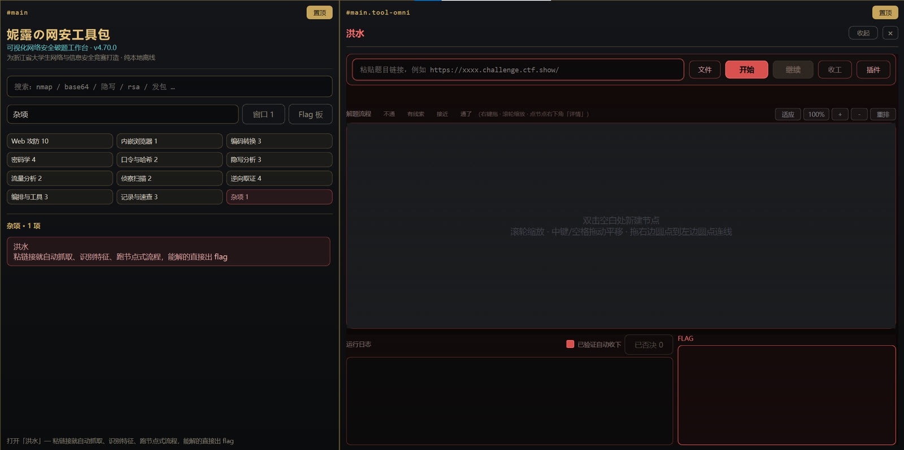
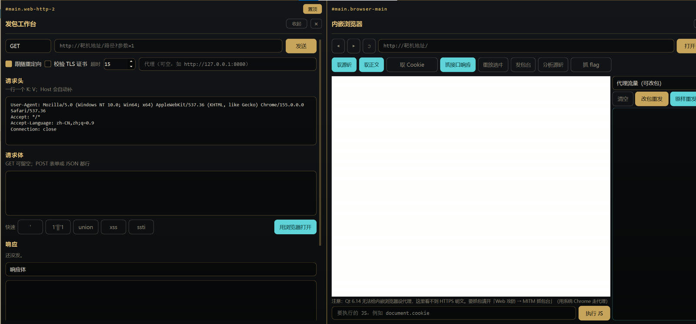

妮露の网安工具箱
个人介绍 · 编程语言


可视化网络安全破题工作台，为浙江省大学生网络与信息安全竞赛打造。
纯本地离线、不联网调模型；自带便携 Python 3.11，双击即用，不装环境、不写注册表。
9 关自检全过才算出货：交付 / 一致性 / 解析层 / 专家系统 / 取证 / 基准 / 全策略 / 界面 / 矩阵。
它是什么
一句话：把「拿到一个目标、或拿到一个文件之后要干的一堆事」，做成了一个会自己动的桌面工作台。
打开之后是左侧条目 + 右侧一个个贴靠的功能窗口：Web 题、Misc 题、取证题、密码题、流量题各有一组工具。其中最重要的两个是：
洪水 · 自动化破题引擎
粘一个网址，按 63 条策略 + 41 条知识库规则 + 21 条专家规则跑一遍，边跑边画节点树，最后告诉你 flag，或者「最接近的几条」。
文件模式
拖进压缩包 / pcap / 图片 / 内存镜像，按类型分诊：解压、解密流量、LSB、编码链、内存镜像雕取。
30 秒上手
- 双击根目录的
妮露の网安工具包.cmd - 日志第一行会打印版本号和「步骤 N 个 · 关键模块 x/x」；看不到这行 = 你在跑旧进程，关掉重开
- 左侧点「洪水」→ 粘题目网址 → 点「开始」
- 跑完看两个地方：flag 框（有没有 flag）、日志最后的「最接近的几条」
- 没出 flag 时，看日志里有没有「→ 需要你操作：…」，有就照那句话做
两种工作模式
网址模式
- 访问目标，抓正文 / 表单 / JS 接口 / 注释 / 长串
- 先按特征给「专家假设」：有登录框？JWT？上传？403？
- 63 条策略按「看起来多有戏」排队跑
- 堆空了还没结果，就问专家系统要下一步
- 结束给结论 + 建议
文件模式
拖文件进「文件」面板的虚线框，节点树分两条：
载入文件 → 识别文件 → 找 flag
- 提取到的信息（IP / 邮箱 / URL / MAC / 疑似凭据）
- 系统属性 · 内存镜像（
.raw/.mem/.vmem/.dmp） - 按类型分支（压缩包 / 流量 / 图片 / 文本 / 二进制）
内存镜像那条会直接列出计算机名、IP、系统 build、版本串、网关、DNS、用户目录，每行都带出处。它不替你拼 flag —— 拼接格式不固定，猜错反而误导。
节点树怎么读
每个方块 = 一次尝试：标题写「干了什么」，下面一行是结论。颜色就是分数。
暂停时点「继续」= 认可，连同祖先一起变绿并收 flag；点「否决」= 这条变红、flag 作废，引擎继续找。双击任意节点看详情：完整报告、发过的包、证据、可重跑。
为什么叫洪水
它不是一个漏洞扫描器，而是一个会排队、会评分、会改变主意的解题调度器：有戏就一路深挖，没戏就挨个铺开。
每个待办节点有个 promise（戏份），放进堆里，高的先弹；同分按入堆顺序先进先出；深度每加一层乘 0.97，防止在死胡同里无限钻。硬上限：最多 120 个节点、9 层深、默认预算 240 秒。
| 三种「脑子」 | 是什么 | 举个例子 |
|---|---|---|
| 流程策略 · 56 条 | 会推理的流程 | 先探登录框 → 试弱口令 → 看 Set-Cookie → 拿会话回扫后台 |
| 知识库 · 41 条 | 有依据的清单，挨个试 | /flag.txt /f1ag.php /flag/flag.php /admin/ /actuator/env |
| 专家系统 · 21 条 | 前向链推理，观察 → 假设 | 上传落盘 hash.zip 且不解析 → 试 upload/<hash>.zip/x.php |
专家推理链在节点详情里能看到：事实几条 → 命中哪条规则 → 推出什么 → 为什么。
覆盖的题型
每一条能力都有对应基准题，bench 全过才算覆盖。
| 类 | 里面有什么 | 基准题 |
|---|---|---|
| 信息泄露 | .git 拉取、.svn、.DS_Store、编辑器残留、备份、phpinfo 探针 | c06 / c86–c88 |
| 认证 | 弱口令、无鉴权改密、JS 登录接口、Cookie 越权、会话固定、JWT alg=none | c07 / c32 / c95 |
| 注入 | UNION、布尔 / 时间盲注、报错、堆叠写 shell、NoSQL、WAF 绕过（un/**/ion） | c14 / c35 / c100 |
| 上传 | 后缀 × MIME 矩阵、.htaccess、.user.ini、文件名穿越、落盘改名后的 PATH_INFO | c94 / c96 / c113–c117 |
| 包含 | php://filter、日志投毒、session 文件、/proc/self/* | c24 / c30 / c105 |
| 命令执行 | 参数 RCE、无字母数字（通配符 / ~ 取反）、过滤绕过（${IFS} / 引号 / 通配符） | c11 / c99 / c110 |
| 反序列化 | 属性篡改、__wakeup 绕过（CVE-2016-7124）、phar、POP 链 | c29 / c101 |
| 服务端请求 | SSRF file:// / 内网 / gopher 手写 HTTP、XXE 有回显 | c20 / c103 / c104 / c109 |
| PHP 特性 | 弱比较、md5 数组、0e、双重 md5 碰撞、parse_str 覆盖、CRLF 头注入、in_array 弱比较、HPP | c97 / c98 / c102 / c107–c112 |
| 其它 | 条件竞争、JS 沙箱逃逸、变量覆盖、数值篡改、前端加密、图片隐写 | c40 / c61 / c91–c93 |
结果落在哪 · 九关自检
结果都写在哪
cache/runs/ | 每轮一份日志：每个节点谁跑了、结果、分数、耗时 |
cache/solves/ | 有 flag 的轮次额外存一份解题步骤 |
cache/errors/ | 崩溃堆栈（有的话） |
state/ | 面板参数与历史记录 |
整个 cache/ 随时可删，不影响使用。
九关自检
双击 文档\跑基准.cmd，依次跑：交付清单、文档与代码一致性、解析层回归（14 条）、专家系统自检（11 条）、取证自检（7 条）、基准 136 道、63 条策略空跑、界面端到端（12 条）、类 × 入口矩阵（20 格）。
想过单题：… -m nilu._selftest.bench c114 c118。
怎么加自己的能力
三条路，都不用大改代码：
- 加一条请求规则 —— 写
config/custom_steps.json，重启即生效，启动日志的「步骤 N 个」会从 63 变成 64。 - 加知识库规则 —— 在
nilu/engine/kb.py的RAW表加一行：家族 / 为什么试 / 方法 / URL 模板 / 参数 / 候选值 / 命中判据。 - 加专家规则 —— 在
nilu/engine/expertkb.py加一个ES.Rule(...)：when写要看到哪些事实，then写推出什么动作，第五个参数是给人看的理由。
{"steps":[{"key":"up_pi","title":"upload 目录 PATH_INFO","method":"GET",
"url":"{{base}}upload/{{arg}}/x.php","param":"c",
"payloads":["id","cat /flag"],"match":"uid="}]}每加一条都要过 bench（136 道全过）+ 对应自检，否则只是「看起来能解」。
便携性与边界
自带 runtime/py311/python.exe（Python 3.11.17）与全部依赖，不需要装 Python；不写注册表、不装服务、不改系统环境变量；所有路径都相对工具包根目录，拷走就能用。
只对有授权的目标使用（比赛实例、自己的靶场、授权测试）。工具本身不联网、不上传任何数据，结果只落本地 cache/。